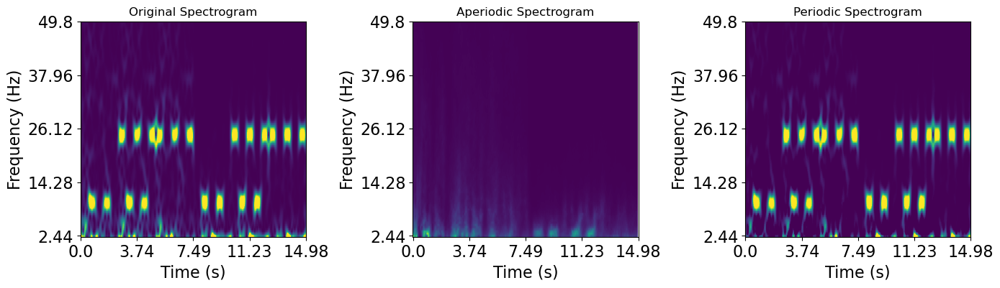

[1]:
import sys
from neurodsp.sim import set_random_seed
from neurodsp.sim import sim_powerlaw, sim_oscillation
from neurodsp.utils import create_times
from neurodsp.plts import plot_timefrequency#
from neurodsp.timefrequency import compute_wavelet_transform
import numpy as np
import matplotlib.pyplot as plt
#import seaborn as sns
import pandas as pd
import matplotlib as mpl
new_rc_params = {'text.usetex': False,
"svg.fonttype": 'none'
}
mpl.rcParams.update(new_rc_params)
set_random_seed(84)
from pyrasa.irasa import irasa_sprint
[2]:
# Set some general settings, to be used across all simulations
fs = 500
n_seconds = 15
duration=4
overlap=0.5
# Create a times vector for the simulations
times = create_times(n_seconds, fs)
alpha = sim_oscillation(n_seconds=.5, fs=fs, freq=10)
no_alpha = np.zeros(len(alpha))
beta = sim_oscillation(n_seconds=.5, fs=fs, freq=25)
no_beta = np.zeros(len(beta))
exp_1 = sim_powerlaw(n_seconds=2.5, fs=fs, exponent=-1)
exp_2 = sim_powerlaw(n_seconds=2.5, fs=fs, exponent=-2)
alphas = np.concatenate([no_alpha, alpha, no_alpha, alpha, no_alpha])
betas = np.concatenate([beta, no_beta, beta, no_beta, beta])
sim_ts = np.concatenate([exp_1 + alphas,
exp_1 + alphas + betas,
exp_1 + betas,
exp_2 + alphas,
exp_2 + alphas + betas,
exp_2 + betas, ])
[3]:
freqs = np.arange(1, 50, 0.5)
import scipy.signal as dsp
mwt = compute_wavelet_transform(sim_ts, fs=fs,
freqs=freqs, n_cycles=11,
)
irasa_sprint_spectrum = irasa_sprint(sim_ts[np.newaxis, :], fs=fs,
band=(1, 50),
overlap_fraction=.95,
win_duration=.5,
hset_info=(1.05, 4., 0.05),
win_func=dsp.windows.hann)
[4]:
#%%
f, axes = plt.subplots(figsize=(14, 4), ncols=3)
mwt = np.abs(mwt)
plot_timefrequency(times, freqs, mwt, ax=axes[0], vmin=0, vmax=0.5)
plot_timefrequency(irasa_sprint_spectrum.time, irasa_sprint_spectrum.freqs, np.squeeze(irasa_sprint_spectrum.aperiodic), vmin=0, vmax=0.02, ax=axes[1])
plot_timefrequency(irasa_sprint_spectrum.time, irasa_sprint_spectrum.freqs, np.squeeze(irasa_sprint_spectrum.periodic), vmin=0, vmax=0.1, ax=axes[2])

[5]:
ap_spec = irasa_sprint_spectrum.fit_aperiodic_model()
[6]:
ap_spec.gof
[6]:
| mse | R2 | R2_adj. | BIC | BIC_adj. | AIC | fit_type | ch_name | time | |
|---|---|---|---|---|---|---|---|---|---|
| 0 | 0.015514 | 0.953981 | 0.953012 | -9.931150 | -16.246852 | -15.101085 | fixed | 0 | 0.000 |
| 0 | 0.012203 | 0.960979 | 0.960157 | -11.031624 | -17.347327 | -16.201559 | fixed | 0 | 0.024 |
| 0 | 0.008988 | 0.968400 | 0.967735 | -12.433772 | -18.749474 | -17.603707 | fixed | 0 | 0.048 |
| 0 | 0.006437 | 0.974351 | 0.973811 | -13.964397 | -20.280099 | -19.134332 | fixed | 0 | 0.072 |
| 0 | 0.004351 | 0.980156 | 0.979738 | -15.760302 | -22.076004 | -20.930237 | fixed | 0 | 0.096 |
| ... | ... | ... | ... | ... | ... | ... | ... | ... | ... |
| 0 | 0.008244 | 0.980839 | 0.980435 | -12.829907 | -19.145609 | -17.999842 | fixed | 0 | 14.880 |
| 0 | 0.008216 | 0.980993 | 0.980593 | -12.845634 | -19.161336 | -18.015569 | fixed | 0 | 14.904 |
| 0 | 0.008778 | 0.979619 | 0.979190 | -12.542240 | -18.857942 | -17.712175 | fixed | 0 | 14.928 |
| 0 | 0.008554 | 0.979376 | 0.978942 | -12.660913 | -18.976615 | -17.830848 | fixed | 0 | 14.952 |
| 0 | 0.009013 | 0.978229 | 0.977771 | -12.420829 | -18.736531 | -17.590764 | fixed | 0 | 14.976 |
625 rows × 9 columns
[7]:
f, ax = plt.subplots(nrows=3, figsize=(8, 7))
ax[0].plot(ap_spec.aperiodic_params['time'], ap_spec.aperiodic_params['Offset'])
ax[0].set_ylabel('Offset')
ax[0].set_xlabel('time (s)')
ax[1].plot(ap_spec.aperiodic_params['time'], ap_spec.aperiodic_params['Exponent'])
ax[1].set_ylabel('Exponent')
ax[1].set_xlabel('time (s)')
ax[2].plot(ap_spec.aperiodic_params['time'], ap_spec.gof['R2'])
ax[2].set_ylabel('R2')
ax[2].set_xlabel('time (s)')
f.tight_layout()

[31]:
peaks_spec = irasa_sprint_spectrum.get_peaks(cut_spectrum=(1, 40),
smooth=True,
smoothing_window=1,
peak_threshold=2,
min_peak_height=0.01,
peak_width_limits=(0.5, 12))
[32]:
f, ax = plt.subplots(nrows=3, figsize=(8, 7))
for ix, cur_key in enumerate(['cf', 'pw', 'bw']):
ax[ix].plot(peaks_spec['time'], peaks_spec[cur_key])
ax[ix].set_ylabel(cur_key)
ax[ix].set_xlabel('time (s)')
ax[ix].set_xlim(0, 15)
f.tight_layout()

[33]:
from pyrasa.utils.peak_utils import get_band_info
df_alpha = get_band_info(peaks_spec, freq_range=(8,12), ch_names=[])
alpha_peaks = df_alpha.query('pw > 0.10')
beta_ts = alpha_peaks['time'].to_numpy()
t1 = beta_ts[0]
n_peaks = 0
for ix, i in enumerate(beta_ts):
try:
diff = beta_ts[ix + 1] - i
if diff > 0.025:
n_peaks += 1
except IndexError:
pass
n_peaks
#%%
df_beta = get_band_info(peaks_spec, freq_range=(20, 30), ch_names=[])
beta_peaks = df_beta.query('pw > 0.10')
beta_ts = beta_peaks['time'].to_numpy()
t1 = beta_ts[0]
n_peaks = 0
for ix, i in enumerate(beta_ts):
try:
diff = beta_ts[ix + 1] - i
if diff > 0.025:
n_peaks += 1
except IndexError:
pass
n_peaks
# %%
f, ax = plt.subplots(figsize=(12, 4), ncols=2)
ax[0].plot(df_alpha['time'], df_alpha['pw'])
ax[1].plot(df_beta['time'], df_beta['pw'])
yax = ['Alpha Power (8-12Hz)', 'Beta Power (20-30Hz)']
for ix, c_ax in enumerate(ax):
c_ax.axhline(0.1, color='r', linestyle='--')
c_ax.set_xlabel('Time (s)')
c_ax.set_ylabel(yax[ix])
f.tight_layout()

[ ]:
[ ]:
[ ]: